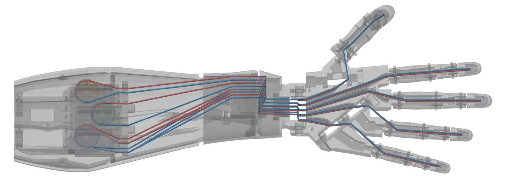
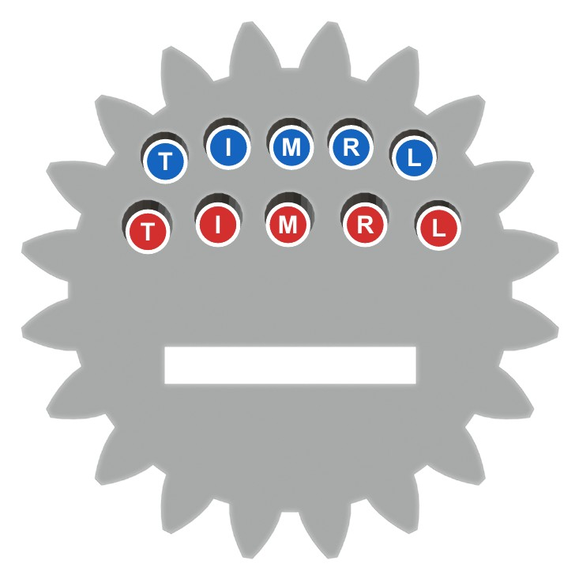
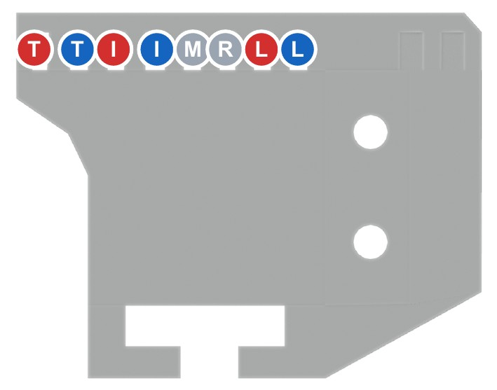
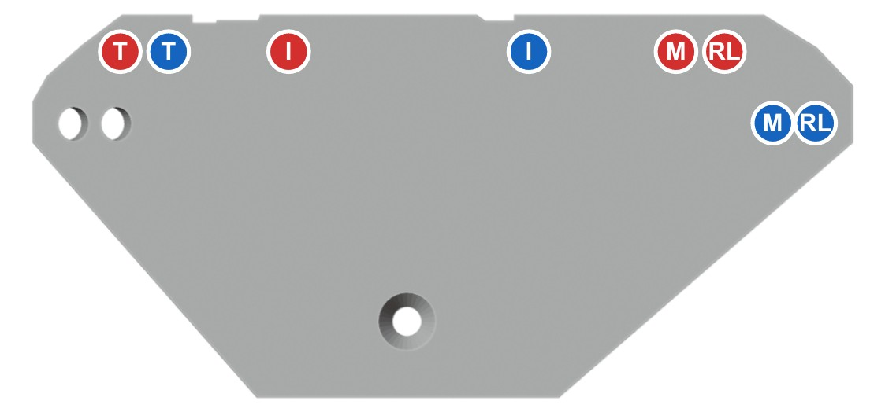
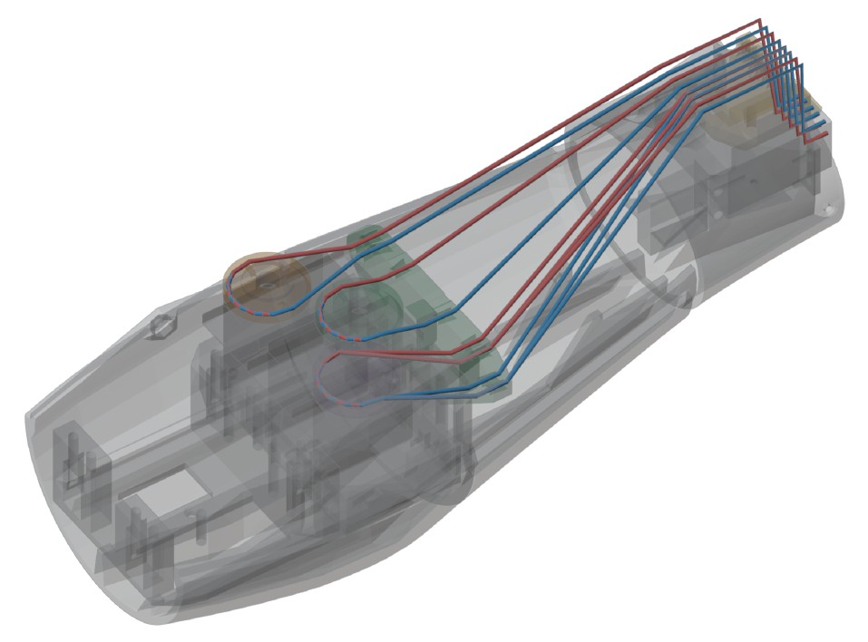
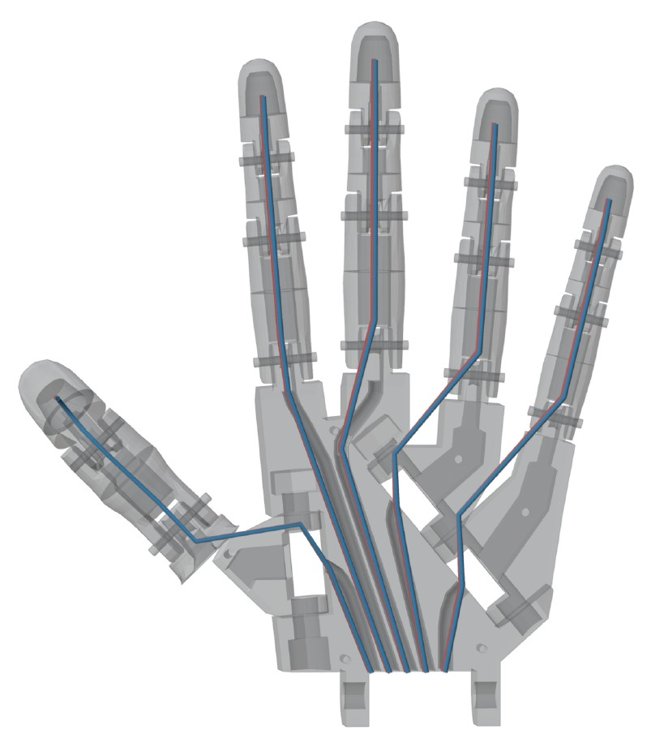

Starts from your photo (7 Oct). 10 steps. Red = closing string (palm side). Blue = opening string (back). Hand back up, thumb on your left.
Your photo, marked up.
1Fingers strung. 10 ends out of the palm grid. Good.
2Gear on, round hub toward the hand. Good.
3Ring 3 is missing here. It must sit between the palm and the gear. Fix in Step 1.
4Thumb is loose, hanging on its line. Fix in Step 2.
56Block and flat piece: slide them off the strings. Only ring 3, gear, ring 2 go on now (Step 1).
You need:
Fevikwik + toothpick
Bamboo skewer
Masking tape
Marker pen
Scissors, tweezers
Laptop + Uno + USB
Servo power (AA pack)
Your assembly guide
The 10 steps
1Fix the order on the strings
2Fix the thumb to the palm
3Check the forearm is ready
4Ring 1, then the comb
5String guide
6Strings to the servos
7Slide wrist home, glue, skewer
8Servos to 0°, pulleys on
9Tie the strings on
10Test and tune

The goal: the finished arm from above. Servos and pulleys at the elbow end (left), hand on the right.
Somatic Arm · finish the assembly · 7 Oct 20261
1
Fix the order on the strings
No glue yet
Slide off everything on the loose ends: the block, the flat piece, the gear. The hand stays strung.
Thread ring 3: all 10 ends through its big centre hole. Ears toward the hand.
Thread the gear: each end through its own hole (map). Round hub toward the hand, teeth toward the forearm.
Thread ring 2: all 10 through its big centre hole.
Leave all three loose. No glue.
Always slide parts on and off from the loose ends. Never pull strings back out of the palm.

Gear seen from the teeth side. Top row blue, bottom row red. T I M R L, left to right.
from the palm: ring 3 → gear → ring 2 → loose ends. Nothing else on the strings.
Same order in 3D, side view (from your stringing guide). Hand on the right here.
Somatic Arm · finish the assembly2
2
Fix the thumb to the palm
Fevikwik dots
Your photo: the thumb's wide end is off the palm.Goal: the wide end sits flat on the angled tab of the palm.
Push the thumb's wide (funnel) end flat against the angled tab on the palm. Its line runs straight from the tab into the funnel.
Put 2 or 3 tiny Fevikwik dots on the outer edge of the joint, with a toothpick. Nowhere near the centre hole where the line runs.
Hold 30 seconds. Point the thumb the same way as in the goal picture.
thumb is solid on the palm, and pulling its red end still bends it.
3
Check the forearm is ready
Check
Forearm from above (lid off). Hand end at the top.
☐ 3 servos in place. Hand end away from you: S1 thumb left, S2 index middle, S3 middle + ring + little right.
☐ String guide (green) in place, between the comb and the servos.
☐ Ring 1 glued on the wrist end of the forearm.
☐ Lock block + comb glued at the wrist end (comb on top of the block).
☐ Pulleys OFF for now. They go on in Step 8.
Any box empty? Do it now with your assembly guide, steps up to 21. Then come back to Step 4.
Label each servo cable with tape: S1, S2, S3. You need this in Step 8.
Somatic Arm · finish the assembly3
4
Through ring 1, then into the comb
Comb
Hold the forearm with the lid side up.
Push all 10 loose ends through ring 1's centre hole, into the forearm.
Go over the lock block, not through it.
Press each string down into its slot in the comb. Left to right:
TTIIMRLL
Grey = that finger's red and blue share one slot (middle, ring).

Comb from above. Hand end at the top. Thumb on the left.
10 strings through ring 1, each lying in its comb slot, none crossing.
5
Through the string guide
String guide

String guide, looking toward the hand. Thumb on the left. Unmarked holes are spare.
Push each string through its own hole in the green string guide, toward the servos.
Thumb holes on the left. Index in the middle. Middle + ring + little on the right.
Ring and little share a hole: one for both reds RL, one for both blues RL.
Pull each string gently. If it rubs or crosses another, swap its hole.
every string goes straight from its comb slot to its guide hole. No crossings.
Somatic Arm · finish the assembly4
6
Bring each pair to its servo
Don't tie yet

Strings from the wrist (right) to the 3 pulleys.
Strings
Go to
TT thumb (2)
S1, left
II index (2)
S2, middle
MMRRLL (6)
S3, right
Let each group hang next to its servo.
Tape each group to the forearm wall with masking tape, so they don't mix.
Don't tie. Keep at least 15 cm spare on each.
7
Slide the wrist home, glue, fix the hand
Glue: dots only
Slide ring 2, gear, ring 3 up against ring 1. At the same time pull the loose ends at the servo end, so no loops get trapped.
Hand fully open. Put tiny Fevikwik dots on the outer rim where each part touches the next. Keep glue away from the centre and the strings.
Slide the hand up to ring 3. Line up the holes in ring 3's ears and the palm's wrist tabs (as in assembly guide step 23).
Push the skewer through all the holes. Cut it 2 mm past each side. One dot of glue on each skewer end only.
Never let glue touch a string. A glued string can't slide, and that finger is dead.
pull each of the 10 strings at the servo end: every one still slides and moves its finger.
Somatic Arm · finish the assembly5
8
Servos to 0°, then fit the pulleys
Laptop
Plug the servo cables: S1 → pin 9, S2 → pin 6, S3 → pin 5. Power as in your wiring guide (AA pack on the servos, grounds joined).
In Arduino IDE open firmware/servo_zero/servo_zero.ino and Upload. Electrodes OFF.
All 3 servos go to 0° and stay there. (They twitch once after 3 s. Ignore it for now.)
Push each pulley straight down onto its servo. Don't turn the shaft. Turn the pulley so its tie hole points to the elbow (away from the hand).
Press the Uno's RESET button. After 3 s, S1, then S2, then S3 turns a little toward close and back.
Watch each one. Draw an arrow on top of each pulley in the way it turned.
Pulley sits on a servo horn? Glue the horn into the pulley first (Fevikwik, wait 2 min). Then push it on.
Missed the turn? Press RESET again. It repeats every time.
3 pulleys on, servos at 0°, an arrow on each pulley showing "close".
Somatic Arm · finish the assembly6
9
Tie the strings to the pulleys
Hand open
Look down at the pulley, hand end at the top. Pick the picture that matches your arrow:
Why: the "close" turn winds red onto the pulley (finger bends) and lets blue off at the same time.
Check first: pull the red end by hand, the finger closes. Pull blue, it opens. If not, they're swapped: swap the colour tape.
All fingers straight. Servo still at 0° (servo_zero running).
Red: down its side, around the pulley groove, through the tie hole (no hole: round the horn arm). Pull until the slack is gone but the finger does not bend. Tie 3 knots.
Blue: down the other side, through the same hole. Pull just snug. Tie 3 knots.
One tiny drop of Fevikwik on each knot only. Cut the ends to 1 cm.
S3 has 6 strings. Tie the 3 reds (M, R, L) one at a time, each just snug, then the 3 blues. All 3 fingers must start bending together.
S1, S2, S3 tied. Hand stays fully open. No string is slack.
Electrodes on. LED solid: relax 3 s. LED blinking: squeeze hard 3 s. LED off: ready.
Squeeze: hand closes. Relax: it opens.
If you see this
Do this
Finger opens when its servo says close
Red and blue are swapped on that pulley. Re-tie them on the opposite sides.
Finger closes only a little
Re-tie its red 2 to 3 mm tighter. Still short: raise that servo's CLOSED_ANGLE by 5.
Servo buzzes or gets hot when closed
Lower that servo's CLOSED_ANGLE by 5 (e.g. 90 → 85). Repeat until quiet.
Finger stays bent when open
Blue too loose. Re-tie it snug.
One of M / R / L lags the others
Its red is looser. Re-tie it a little tighter.
String slips on the pulley
Re-knot through the hole, 3 knots, drop of Fevikwik on the knot.
Uno restarts mid-test (Serial Monitor shows "servo test start" again)
Weak AA cells or a loose power wire. Fresh cells, check the breadboard wires.
Where to change angles: line const int CLOSED_ANGLE[3] = {90, 90, 90}; Order is S1 thumb, S2 index, S3 M+R+L. Change it the same way in somatic_arm.ino, servo_test.ino and servo_zero.ino.

all 5 fingers close and open with the servos, 10 times in a row, no buzzing.
Last: close the forearm lid. Use tape, not glue, so you can re-tune before the evaluation.
Upload code only with the electrodes OFF your arm (or the laptop charger unplugged).
Part pictures from the Somatic Arm stringing guide (InMoov by Gael Langevin, inmoov.fr, CC BY-NC).8